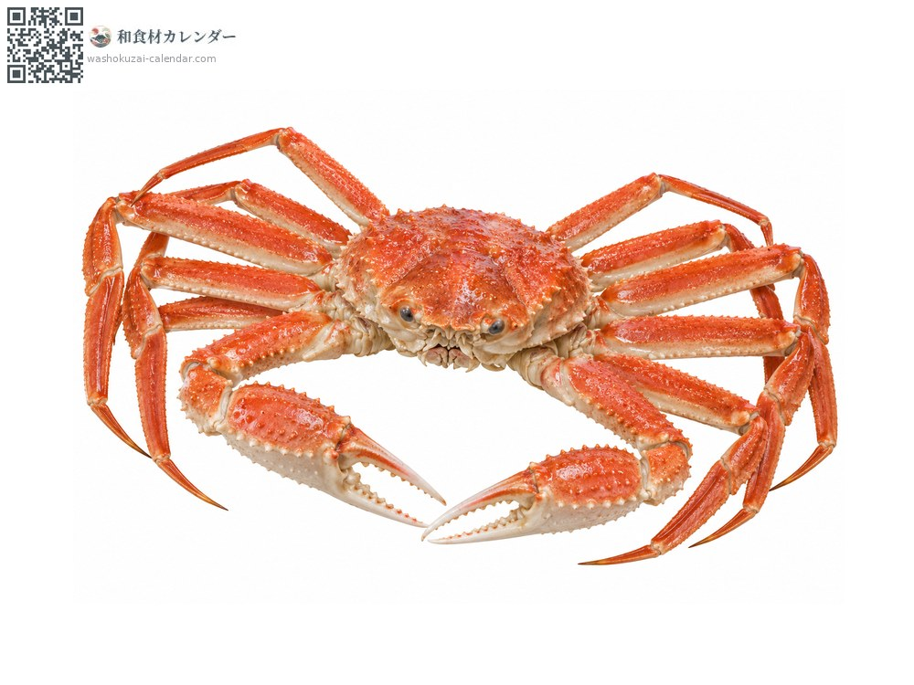
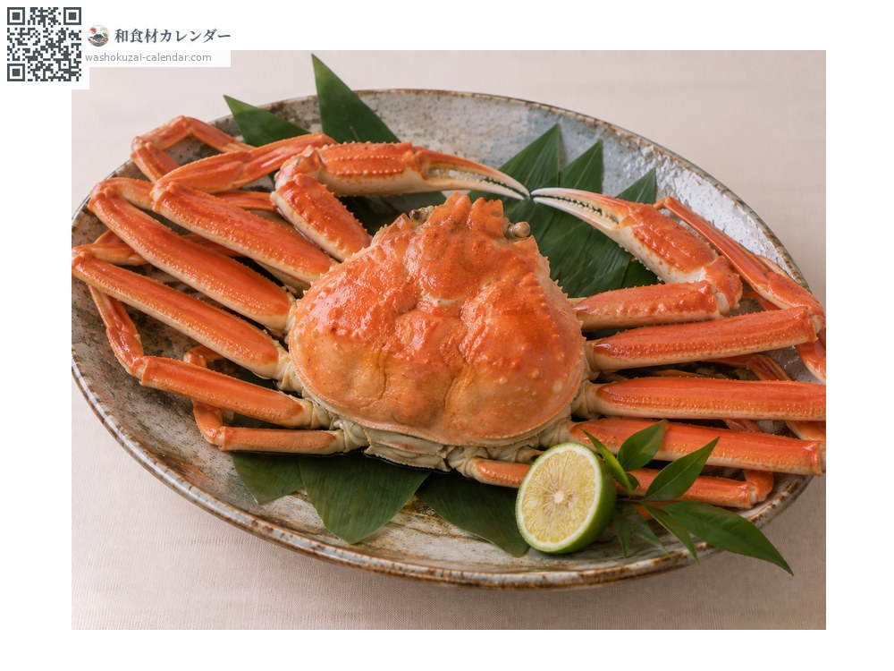
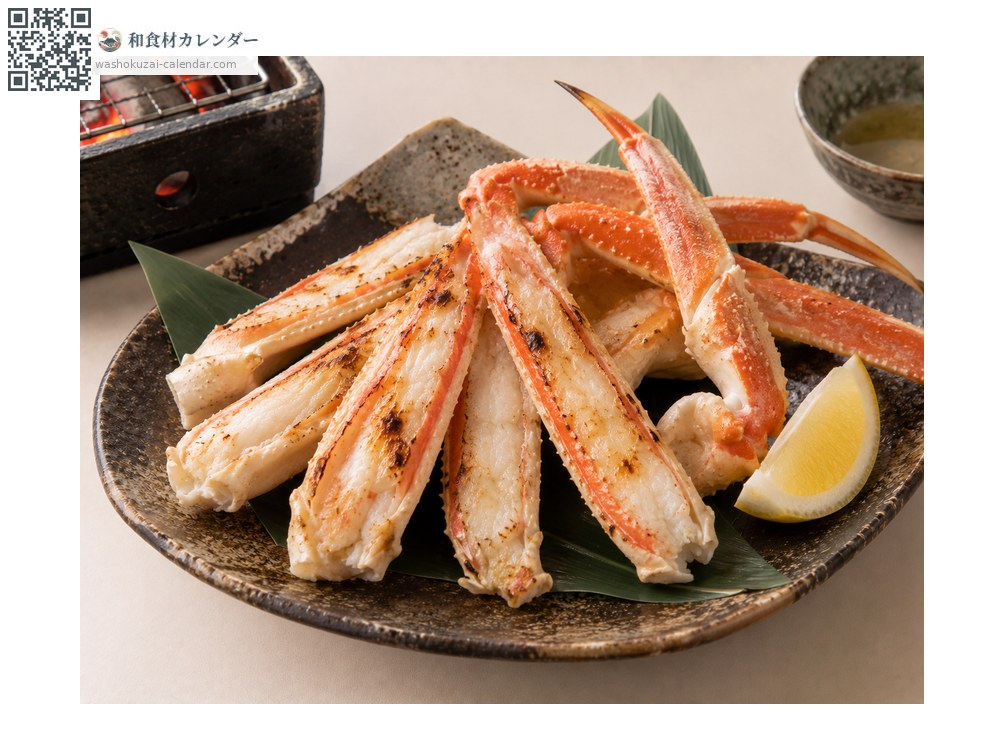
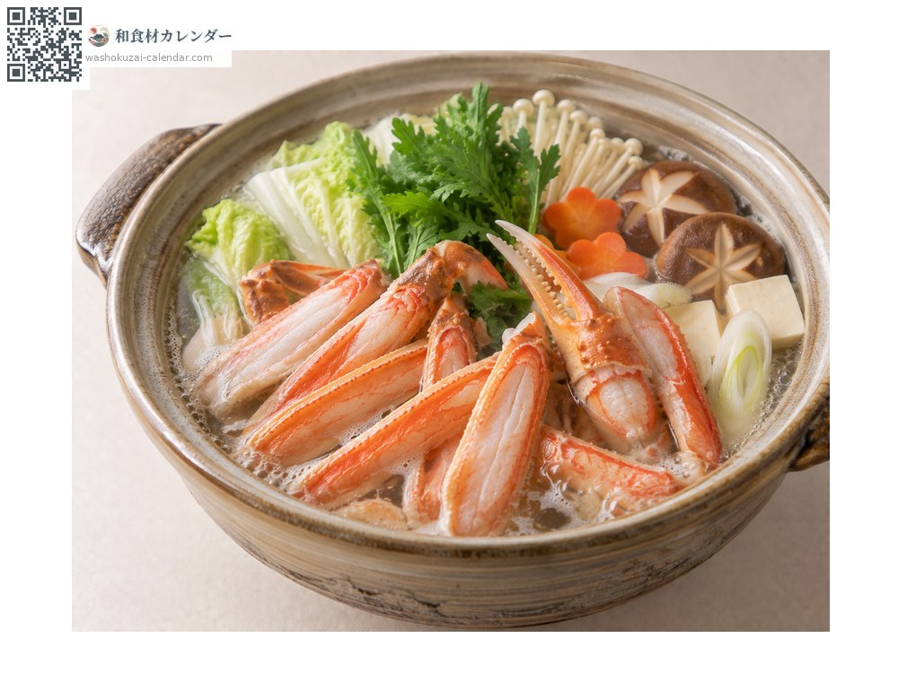
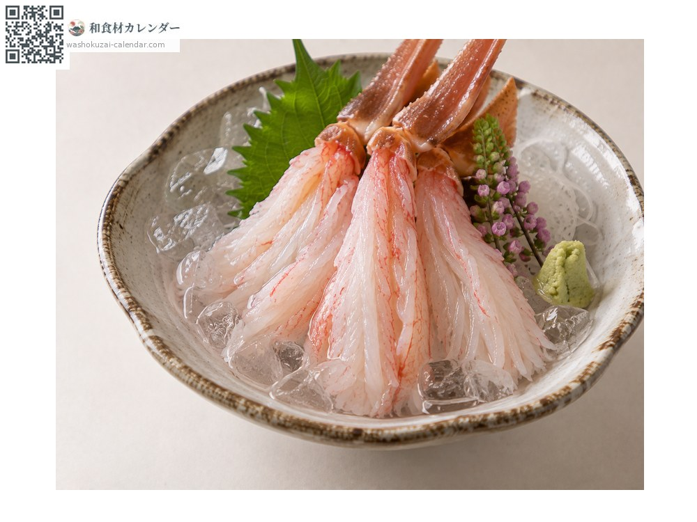

海鲜
雪蟹（松叶蟹）
ズワイガニ ずわいがに zuwaigani
别名zuwaigani
应季时期为1月、2月、3月、11月、12月

应季时期
1月
2月
3月
4月
5月
6月
7月
8月
9月
10月
11月
12月
应季有供应
烹饪方法

整只水煮蟹
盐水煮熟后直接享用。

烤蟹脚
连壳炭烤，香气四溢。

蟹肉火锅
做成火锅，最后再煮杂炊。

生鱼片
活蟹泡冰水，蟹肉会像花一样绽开。
挑选方法
拿起来有重量感、蟹壳坚硬、蟹脚齐全。
保存方法
水煮过的冷藏可放2至3天。生的当天加热。
主要产地
小知识
各产地有不同品牌名，如福井的越前蟹、京都的间人蟹、山阴的松叶蟹。渔期为11月上旬至3月下旬。